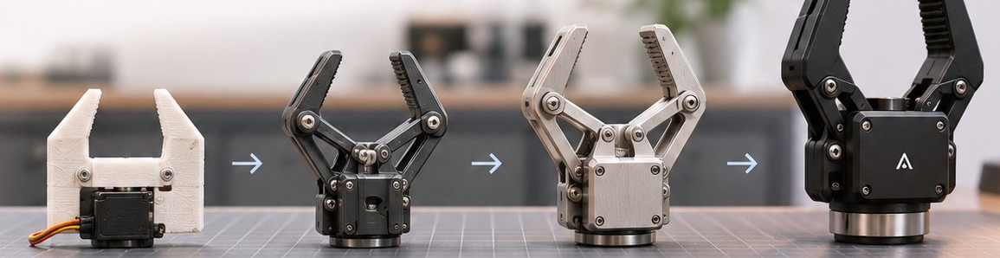

Krypto说AI
AI builder
10 / 10
工程师的思维模型
迭代
Iteration
怎么一步步把它变好？
先做一个简单版本，测试，从结果里学习，
下一轮做得更好
。

v1
原型
v2
更结实
v3
更轻
v4
打磨定型 ✓
迭代循环
① 构建
② 测试
④ 改进
③ 学习
构建 → 测试 → 学习 → 改进，再来一轮
每一轮的结果
v1
v2
v3
v4
7
15
25
35
抓力
（牛）
一句话记住
进步来自
把这个循环跑很多遍
。第一次就做到完美，几乎不可能。